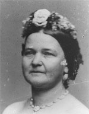

|

|

|
|
|
Wife of President Abraham Lincoln, Mary Todd Lincoln was
born into a wealthy and powerful family of slaveholders near
Lexington, Kentucky in December, 1818. Although the
Lincolns' marriage was a loving one, Mary never succeeded in
winning much popular support while First Lady and in the
wake of her husband's assassination she descended into
mental instability.
Because Mary Todd's father, a prominent Whig politician,
strongly supported female education, Mary enjoyed a wide
ranging intellectual training unusual for girls in the 19th
century. In 1839, Mary Todd joined her sister's household in
Springfield, Illinois. There, she met the young attorney
Abraham Lincoln. Although Lincoln was an ambitious
professional man, he lacked education and his manners were
unpolished. By 19th century Victorian standards, his
behavior was occasionally rude and countrified.
Nevertheless, Lincoln and Mary Todd were married in 1842.
Mary supported Abraham's political aspirations and matched
his ambition with her own from the very start of their
married life. As a measure of their political partnership,
Lincoln exclaimed, when he first heard of his election to
the Presidency in 1860, "Mary, Mary, we are elected."
When Lincoln assumed the Presidency, the White House was
in disrepair, its furnishings old and shabby and its
structure in need of refurbishing. Mary Lincoln took it upon
herself, as First Lady, to make drastic improvements to the
public rooms of the White House. She believed that the home
represented the power of the Union and therefore that it was
required to be impressive and opulent. As a result, when
replacing the peeling wallpaper, worn furniture and cheap
decorations, Mary Lincoln purchased goods of exceptionally
high quality and cost. Although Washington agreed that the
White House required some improvement, some of her purchases
were considered too extravagant and she suffered criticism
from a number of sources. To show off the new rooms, Mary
Todd Lincoln hosted a number of dinner parties for official
Washington, and her invitations were highly prized.
Socially, she was a success.
However, her tenure in Washington was not without both
tragedy and controversy. A devoted mother and wife, Mary
suffered the losses of many of her family during the war,
including two of her half brothers, who were Confederate
soldiers. In 1862, the Lincolns lost their twelve-year-old
son, Willie, to typhoid fever. In spite of her position as
the wife of the commander in chief, Mary was criticized by
many people for her strong ties to the South. She was even
accused of being a rebel spy and of passing Union secrets to
the Confederates.
The greatest loss to Mary Todd Lincoln, however, was the
death of her husband by an assassin's bullet on April 15,
1865. In both material and personal terms, she never
recovered from his death. Abraham Lincoln had left an estate
which was $70,000 in debt from his wife's lavish spending in
the White House. Mary Todd Lincoln was unable to control her
spending even after her husband's death. In spite of the
debt he had left behind, she continued to spend with
abandon, accumulating vast debts of her own.
Unstable and grief-stricken, Mary Todd Lincoln and her
son, Tad, sough solace in travels to Europe. When Tad died
in 1871, Mary was unable to cope and her final surviving
son, Robert, was forced to commit her to a private mental
institution outside of Chicago in 1875. She remained there
for four months, but found it unbearable and fled to France,
where she lived for a number of years. In 1882, Mary
returned to Springfield, Illinois, where she died and was
buried beside her husband at Oak Ridge cemetery.
Source: Joan Waugh, ed., Facts on File Encyclopedia of American
History: Civil War and Reconstruction, 1856 to 1869 (New York: Facts on
File, 2003), 211-212.
|